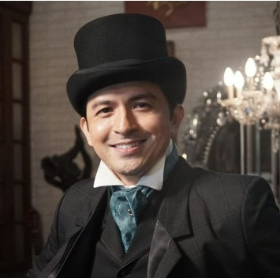
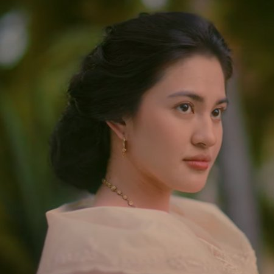
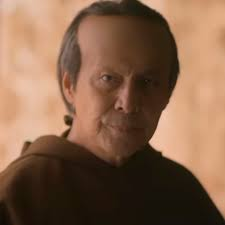
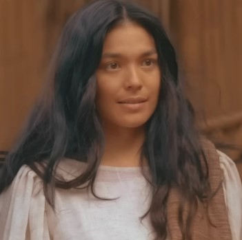
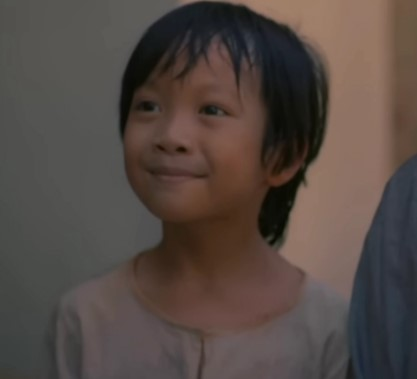
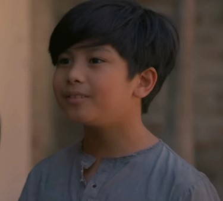
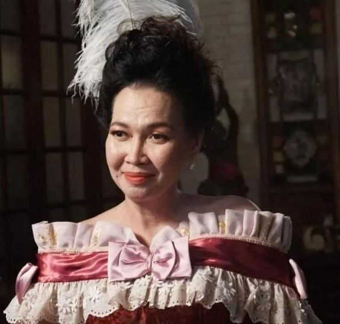
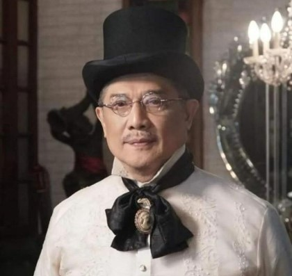
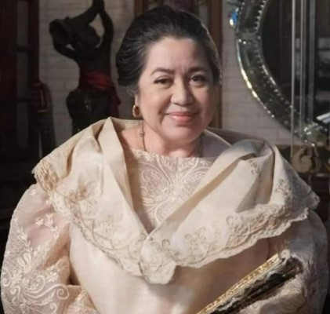

✿ Chelsea Anika P. Cham ✿ ✿ 9-Emerald ✿
♥ CHARACTERS IN NOLI ME TANGERE ♥
|
| Pictures |
Name |
Description |
|  |
- Juan Crisostomo Ibarra y Magsalin (Ibarra) |
- Ang Protagonista sa Noli Me Tangere
- Bata na matalino nag-aaral sa europa ng 8 na taon
- Anak ni Don Rafael
- Minamahal ni Maria Clara
|
|  |
- María Clara de los Santos y Alba |
- Ang Mahal Ni Christomo at bestfriend niya
- Babaeng relihiyoso plagi asa simbahan
- Anak ni Kapitan Don Tiago at Donya Tia Alba
- Isang Maganda na mestiza
|
|  |
- Padre Dámaso Verdolagas |
- Isang Corrupt na Padre na gusto lang pera
- Maggalit kay Crisistomo dahil ayaw niya maging asawa niya si Maria
- Linipat sa ibang capitak dahil nalaman ung mga gingawa sa San Diego
- Ginagamit ang pagkataas ng ranko niya para sa mga mali
|
|  |
- Narcisa (Sisa) |
- Nanay ni Crispin at Basillio
- Mapagmahalin na nanay tingin sa anak niya mga angel
- Naaubuso ng Asawa pero minamahal parin at tingin dios ang asawa
|
|  |
- Crispin |
- Anak ni Sisa at Pedro
- Siya ay 7 yrs old at Isang sakristan
- Pinapalo ng Tao na nagbabantay sakanya kung may ginawa na mali
|
|  |
- Basillio |
- Anak ni Sisa at Pedro
- Siya ay 10 yrs old at Isang sakristan den
- Naaccuse na magnanakaw dahil sa 2 onsas
- Kapatid ni Crispin
|
|
- Padre Bernardo Salvi |
- Isang Padre na nagpakit kay Padre Damaso
- Siya ay may gusto kay Maria Clara
- Siya Den ay isang corrupt na pari
|
|  |
- Doña Victorina |
- Asawa ni Don Tiburcio de Espadaña
- Siya ay Feeling espaniol at kinakalimutan ang kanyang filipino
- Nagsususot ng mga Damit ng mga espaniol
|
|  |
- Kapitan Tiago |
- Friend ni Don Rafael at Padre Damaso
- Nagalaga ng anak niya pagkamatay ng asawa ni si Pia Alba
- Isang buisnessman na madami den ang pera
|
|  |
- Tiya Isabel |
- Nagalaga kay Maria Clara nung bata pa siya
- Kapatid ni Kapitan Tiago
- Siya ay parang naging nanaya ta bestfriend ni Pia alba
|
https://www.gmanetwork.com/news/showbiz/chikaminute/846582/here-s-a-guide-to-the-noli-characters-in-maria-clara-at-ibarra/story/